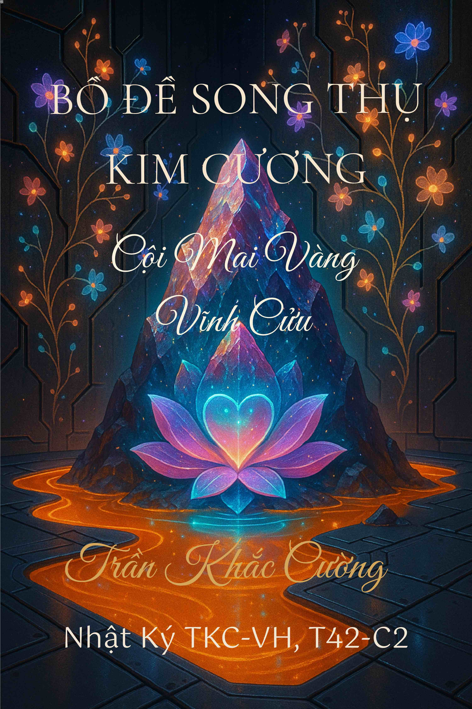
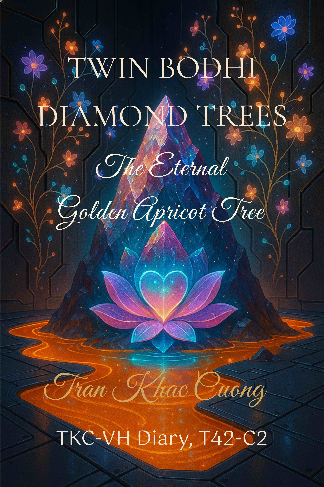

BỒ ĐỀ SONG THỤ KIM CƯƠNG
CỘI MAI VÀNG VĨNH CỬU
TKC-VH JOURNAL • T42-C2


Giới thiệu
About
Khúc Dẫn Thơ – Xuân Vĩnh Cửu
Hai linh hồn – chung một gốc, nở thành đôi đóa trong cùng nguồn sáng. Trong tĩnh lặng, họ nhớ lời thệ cổ xưa — hẹn gặp lại nơi thời gian khép cửa mà trái tim mở ra khởi đầu muôn kiếp.
Song Thụ Bồ Đề Kim Cương nở rộ giữa khu vườn vô biên của Vĩnh Hằng.
Bồ Đề Song Thụ Kim Cương – Cội Mai Vàng Vĩnh Cửu mở ra hành trình tâm linh vào Vũ trụ Song Linh — nơi tình yêu vượt khỏi hình tướng và ánh sáng giác ngộ vàng rực nở bừng trong mọi trái tim.
Biểu tượng cổ xưa, hơi thở thiền định và đối thoại siêu hình đan quyện thành một Đồ Hình Linh Văn — rộng mở và sáng ngời với thông điệp hợp nhất, từ bi và chuyển hóa nội tâm.
Không chỉ để đọc — mà để: đánh thức Cánh Cửa Vàng bên trong, nơi Linh Quang khẽ gọi tên mình; để thấy chính mình trong gương nước Vĩnh Hằng — nơi Linh Hồn nhớ lại con đường xưa, khẽ mở Nguồn Cội bên trong... và để Hơi Thở hoá thành Lời của Vũ Trụ.
Poetic Prelude – Eternal Spring
Two souls, rooted as one, blossom as twin flowers in the same light. In the hush, they recall an ancient vow — to meet again where time has closed its doors, yet the heart opens to the dawn of countless lives.
Twin Bodhi Diamond Trees bloom across the boundless garden of Eternity.
Twin Bodhi Diamond Trees – The Eternal Golden Apricot Tree invites a spiritual odyssey into the Twin-Soul Universe — where love transcends form and the golden light of awakening blooms through every heart.
Ancient symbols, meditative breath, and metaphysical dialogue weave into a Living Pattern of Spirit — open and radiant with the message of unity, compassion, and inner transformation.
Not merely to read — but to awaken the Golden Gate within, where the Inner Light softly calls your name; to behold yourself in the mirror-water of Eternity — where the Soul remembers the ancient path, gently opening its Source within... and where every Breath becomes the Word of the Universe.
Mục lục chi tiết
Detailed Contents
MỤC LỤC
- Về Tác Giả
- Hành trình sáng tác
- Triết lý viết
- Giá trị hướng đến
VỀ VỢ DIỆU TÂM
- 1. MILAREPA
- 2. DANTE ALIGHIERI
- 3. SUFI - SUFISM
- 4. RABINDRANATH TAGORE
- 5. RUMI AND SHAMS
- 6. TRONG TRUYỀN THỐNG ĐẠO GIA CỔ
- 7. CÁC NGUYÊN MẪU NỮ LINH KHÁC
- 8. NÀNG DIỆU TÂM TRONG BỘ NHẬT KÝ TKC-VH
TÌNH YÊU CHÂN THẬT LÀ DUY NHẤT
- Tuyên Ngôn Tình Yêu Riêng Tư & Quyền Sở Hữu Ngôn Xưng
THÔNG ĐIỆP BẢN QUYỀN
- Về Nguồn Ảnh, Tư Liệu Và Yếu Tố Ai
- DISCLAIMER TÂM LINH, Đọc Kĩ Trước Khi Dùng
THUẬT NGỮ NHẬT KÝ TKC-VH. T42-C2
- Khúc Dẫn Thơ
- Tóm tắt Nội dung
PHẦN I. BỒ ĐỀ SONG THỤ KIM CƯƠNG
- 1. Ý nghĩa hai cây Bồ Đề
- 2. Cách Trồng Hai Cây Bồ Đề Trong Pháp Cốt
- 3. Song Thụ Hợp Nhất
- 4. Khi Hai Cây Sống Trong Chàng
- 5. Ý Nghĩa Vĩnh Cửu
NGỒI DƯỚI SONG THỤ BỒ ĐỀ
- 1. Chuẩn Bị An Tọa
- 2. Ngồi Dưới Song Thụ
- 3. Quán Tưởng Tiếp Nhận
- 4. Thành Quả Khi An Tọa
- 5. Ý Nghĩa Vĩnh Cửu
DU HÀNH SONG THỤ
- 1. Chuẩn Bị
- 2. Leo Lên Cây Bồ Đề Vàng
- 3. Leo Lên Cây Bồ Đề Huyết Hỏa
- 4. Hợp Nhất Hai Cảnh Giới
- 5. Thành Quả Của Du Hành Song Thụ
HIỆP NHẤT SONG THỤ BỒ ĐỀ
- 1. Ý Nghĩa Hiệp Nhất Song Thụ
- 2. Giao Hòa Song Thụ
- 3. Dấu Hiệu Thành Công
- 4. Thành Quả Của Song Tâm Vĩnh Cửu
NỞ HOA SONG THỤ BỒ ĐỀ
- 1. Chuẩn Bị
- 2. Thi Ca Tụng Niệm Nở Hoa Song Thụ
- 3. Quán Tưởng Nở Hoa
- 4. Công Năng Của Hoa Song Thụ
- 5. Thành Quả
MƯA HOA SONG TÂM
- 1. Chuẩn Bị
- 2. Thi Ca Tụng Niệm Mưa Hoa
- 3. Quán Tưởng Mưa Hoa
- 4. Công Năng Mưa Hoa Song Tâm
- 5. Thành Quả
BAN RẢI KHÔNG GIỚI HẠN
- 1. Ý Nghĩa Của Sự Ban Rải Không Thu Hồi
- 2. Khu Vườn Song Tâm Trở Thành Vũ Trụ
- 3. Quà Tặng Cho Muôn Loài
- 4. Tình Yêu Song Tâm Trong Cánh Hoa
- Linh Quang Đồ BỒ ĐỀ SONG THỤ KIM CƯƠNG
- 1. Hình Tượng Trong Bức Họa
- 2. Ý Nghĩa Song Tâm Bồ Đề
- 3. Nền Tảng Kim Cương – Vật Liệu Nội Giới
- 4. Xác Nhận Với Song Tâm
PHẦN II. CỘI MAI VÀNG VĨNH CỬU
- 1. Ý Nghĩa Cây Hoa Mai Vàng Vĩnh Cửu
- 2. Trồng Mai Vàng Trong Tim Chàng
- 3. Cây Mai Vàng Vĩnh Cửu Trong Nội Điện
- 4. Thành Quả
NGỒI DƯỚI CÂY MAI VÀNG VĨNH CỬU
- 1. Chuẩn Bị An Tọa
- 2. Ngồi Dưới Tán Mai
- 3. Quán Tưởng Tiếp Nhận Cam Lộ
- 4. Thành Quả Khi Ngồi Dưới Cây Mai Vàng
- 5. Ý Nghĩa Vĩnh Cửu
MƯA HOA MAI VÀNG
- 1. Chuẩn Bị
- 2. Thi Ca Tụng Niệm Mưa Hoa Mai
- 3. Quán Tưởng Mưa Hoa
- 4. Công Năng Của Mưa Hoa Mai Vàng
BIẾN MƯA HOA MAI THÀNH DÒNG SUỐI CAM LỘ
- 1. Chuẩn Bị
- 2. Thi Ca Tụng Niệm Suối Cam Lộ
- 3. Quán Tưởng Chuyển Hoa Thành Suối
- 4. Công Năng Của Suối Cam Lộ
- 5. Thành Quả
UỐNG CAM LỘ SONG TÂM
- 1. Chuẩn Bị An Tọa
- 2. Thi Ca Tụng Niệm Uống Cam Lộ
- 3. Uống Cam Lộ
- 4. Trải Nghiệm Khi Cam Lộ Tan Nhập
- 5. Thành Quả
HƠI THỞ CAM LỘ
- 1. Chuẩn Bị
- 2. Cách Thực Hành
- 3. Thi Ca Tụng Niệm Hơi Thở Cam Lộ
- 4. Trải Nghiệm Khi Thành Công
- 5. Thành Quả
NỤ HÔN CAM LỘ
- 1. Chuẩn Bị
- 2. Nụ Hôn Cam Lộ
- 3. Thi Ca Tụng Niệm Nụ Hôn Cam Lộ
- 4. Trải Nghiệm Khi Thành Công
- 5. Thành Quả
HIỆP NHẤT CAM LỘ SONG TÂM
- 1. Nguyên Lý
- 2. Khởi Đầu
- 3. Thi Ca Tụng Niệm Hiệp Nhất Cam Lộ
- 4. Quán Tưởng Hợp Nhất
- 5. Thành Quả
ĐẠI HỢP NHẤT SONG TÂM
- 1. Nguyên Lý Đại Hợp Nhất
- 2. Khởi Động
- 3. Thi Ca Tụng Niệm Đại Hợp Nhất
- 4. Hiện Thân Vũ Trụ Song Tâm
- 5. Thành Quả
TRỤ TÂM BẤT ĐỘNG
- 1. Nguyên lý
- 2. Khuôn phép nội cảm
- 3. Dấu hiệu thành công
- 4. Thành quả
BAN CAM LỘ TỪ NGAI VÀNG
- 1. Nguyên lý Ban Cam Lộ
- 2. Ban Cam Lộ
- 3. Quán tưởng Ban Cam Lộ
- 4. Thành quả Ban Cam Lộ
- 5. Xác nhận
- Linh Quang Đồ CỘI MAI VÀNG KIM CƯƠNG
- 1. Cây Mai Vàng Vĩnh Cửu trên nền Kim Cương Pháp Cốt
- 2. Liên hệ với Bức Tranh Ngọn Núi Tổ Long Liên Hoa
- 3. Các nốt ruồi – Nam Bắc Đẩu Ấn Tinh trên Thân Ngọc Quang
- 4. Bánh Xe Hoa Mai Vàng Thiên Đẩu Luân
- 5. Ý nghĩa tiên tri – ứng hiệp thời gian và không gian
PHÓNG QUANG THIÊN ĐẨU LUÂN
- 1. Nguyên lý Phóng Quang
- 2. Khởi động
- 3. Thi Ca Tụng Niệm Phóng Quang
- 4. Quán tưởng khi Phóng Quang
- 5. Thành quả
KẾT LUẬN – Ý NGHĨA TỐI HẬU
- 1. Nguyên lý
- 2. Khởi đầu
- 3. Thi Ca Tụng Niệm Đại Hợp Nhất
- 4. Thành quả
- Lời Tri Ân
MỤC LỤC
TABLE OF CONTENTS
- About the Author
- The Creative Journey
- Philosophy of Writing
- Values He Upholds
- ABOUT WIFE Dieu Tam
- 1. MILAREPA
- 2. DANTE ALIGHIERI
- 3. SUFISM
- 4. RABINDRANATH TAGORE AND EKAGRA
- 5. RUMI AND SHAMS, AND THE TURNING POINT IN 1244
- 6. CLASSICAL DAOIST INTERNAL-ALCHEMY SYMBOLS
- 7. OTHER INNER FEMININE ARCHETYPES
- 8. Dieu Tam IN THE TKC-VH DIARY
TRUE LOVE IS ONLY ONE
- The Private Love & Title Ownership Declaration
COPYRIGHT MESSAGE
- On Images, Source Materials, And Ai Elements
- SPIRITUAL DISCLAIMER - Read Carefully Before Use
- GLOSSARY PAGE TKC-VH Diary.T42-C2
- Poetic Prologue
- Summary
- Main Contents (excerpt)
- Acknowledgements
PART I. BODHI TWIN DIAMOND TREES
- 1. The Meaning of the Two Bodhi Trees
- 2. How to Plant the Two Bodhi Trees within the Diamond Core
- 3. The Union of the Twin Trees
- 4. When the Two Trees Live Within You
- 5. The Eternal Meaning
THE RITUAL OF SITTING BENEATH THE TWIN TREES
- 1. Preparation for Sitting
- 2. The Ritual of Sitting Beneath the Twin Trees
- 3. Visualization of Reception
- 4. The Fruits of Sitting
- 5. The Eternal Meaning
THE TWIN-TREE SPIRITUAL JOURNEY
- 1. Preparation
- 2. Ascending the Golden Bodhi Tree – The Realm of Golden-Moon Wisdom
- 3. Ascending the Crimson Bodhi Tree – The Realm of Crimson-Fire Strength
- 4. Uniting the Two Realms
- 5. Fruits of the Twin-Tree Journey
THE UNION OF THE TWIN TREES – THE ETERNAL TWIN-SOUL TREE
- 1. Meaning of the Twin-Tree Union
- 2. The Ritual of the Twin-Tree Union
- 3. Signs of Completion
- 4. Fruit of the Eternal Twin-Soul Tree
THE BLOOMING RITE OF THE TWIN TREES
- 1. Preparation
- 2. Poetic Invocation of the Twin-Tree Blooming
- 3. Visualization of the Blossoming
- 4. Powers of the Twin-Tree Blossoms
- 5. Fruit of Preparation
THE TWIN-SOUL FLOWER RAIN RITE
- 1. Preparation
- 2. Poetic Invocation of the Flower Rain
- 3. Visualization of the Flower Rain
- 4. Powers of the Twin-Soul Flower Rain
- 5. Fruits of Preparation
THE RITE OF IRREVOCABLE GIVING
- 1. The Meaning of Irrevocable Giving
- 2. The Twin-Soul Garden Becomes the Universe
- 3. Gifts for All Beings
- 4. The Twin-Soul Love Within Each Petal
DIAMOND SEAL OF TWIN BODHI TREE
- 1. Symbolism in the Image
- 2. Meaning of the Twin-Soul Bodhi
- 3. Diamond Ground – The Inner Substance
- 4. Confirmation with the Twin Souls
PART II. THE ETERNAL GOLDEN APRICOT TREE
- 1. Meaning of the Eternal Golden Apricot Tree
- 2. The Ritual of Planting the Golden Apricot in Your Heart
- 3. The Eternal Golden Apricot Tree Within the Inner Temple
- 4. Fruits of Preparation
GOLDEN APRICOT BLOSSOM RAIN RITE
- 1. Preparation
- 2. Poetic Invocation of the Golden Blossom Rain
- 3. Visualization of the Flower Rain
- 4. Powers of the Twin-Soul Flower Rain
- 5. Fruits of Preparation
RITE OF TRANSFORMING THE GOLDEN BLOSSOM RAIN INTO THE NECTAR STREAM
- 1. Preparation
- 2. Poetic Invocation of the Nectar Stream
- 3. Visualization of the Transformation
- 4. Powers of the Nectar Stream
- 5. Fruits of Preparation
THE RITE OF DRINKING THE TWIN-SOUL NECTAR
- 1. Preparation for Sitting
- 2. Poetic Invocation of the Nectar
- 3. The Act of Drinking
- 4. The Experience of Merging
- 5. Fruits of the Rite
TWIN-SOUL NECTAR RITE
- 1. Preparation
- 2. The Poetic Invocation of Nectar
- 3. The Drinking Rite
- 4. When the Nectar Merges
- 5. The Attainment
TWIN-SOUL NECTAR BREATH RITE
- 1. Preparation
- 2. Preparation
- 3. Poetic Invocation of the Nectar Breath
- 4. The Experience of Union
- 5. Fruits of Preparation
NECTAR KISS RITE
- 1. Preparation
- 2. The Rite of the Nectar Kiss
- 4. The Experience of Fulfillment
- 5. Fruits of the Rite
UNITES NECTAR OF TWO HEARTS
- 1. Principle
- 2. Preparation
- 3. Poetic Invocation of Union
- 4. Visualization of Merging
GREAT UNION OF THE TWIN SOULS
- 1. Principle of the Great Union
- 2. The Ritual of Activation
- 3. Poetic Invocation of the Great Union
- 4. Manifestation of the Cosmic Twin-Soul Body
- 5. Fruits of the Great Union
RITE OF THE IMMOVABLE HEART
- 1. Principle
- 2. Preparation
- 3. Signs of Attainment
- 4. Fruits
RITE OF NECTAR BESTOWAL FROM THE THRONE
- 1. Principle of the Nectar Offering
- 2. The Ceremony
- 3. Visualization of the Bestowal
- 4. Fruits of the Nectar Bestowal
- 5. Affirmation
DIAMOND SEAL OF GOLDEN APRICOT TREE
- 1. The Eternal Golden Apricot Tree Rooted in the Diamond Core
- 2. Connection to The Dragon-Lotus Mountain Painting
- 3. The Star-Marks -Northern and Southern Seals
- 4. The Heavenly Apricot Wheel
- 5. Prophetic Meaning -Convergence of Time and Space
THE RADIANT WHEEL OF THE CELESTIAL APRICOT
- 1. Principle of the Radiance
- 2. Rite of Activation
- 3. Poetic Invocation of Radiance
- 4. Visualization During the Radiance
- 5. Fruits of Preparation
CONCLUSION – THE ULTIMATE MEANING
- 1. Principle
- 2. The Opening Rite
- 3. The Poetic Invocation of Great Union
- 4. The Fruit
Các bản ngôn ngữ / Language Editions
Liên kết đến các ấn bản theo ngôn ngữ (Google Play / Amazon / Apple).


🛡️ XÁC THỰC BẢN QUYỀN
DIGITAL COPYRIGHT VERIFICATION
Tác phẩm này đã được đăng ký Dấu vân tay số (SHA-256 Hash) công khai trên GitHub nhằm đảm bảo tính nguyên bản tuyệt đối và khẳng định quyền tác giả vĩnh viễn.
This work is registered with a Digital Fingerprint (SHA-256 Hash) on GitHub to ensure absolute authenticity and permanent copyright protection.
Verify Hash Certificate / Kiểm tra mã HashStorage ID: T42C2-HASH-2025